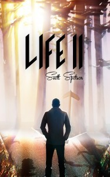

From the journal
5 Stars: The Unlived Life of Max ("Life II" Time Travel Book)
Terrific review! I liked this part:
I remember riding on my teacher's motorcycle from Dobbs Ferry to New York City July 4th weekend ( 1985) to watch "Back to the Future" I was blown away by the concept of Marty going back in time incidental endangering his very own existence. What makes that movie a perfect screenplay, plot diagram, and enjoyable on repeat viewing is that it sets up the rules without too much complication or technobabble. Life II by Scott Spotson works because the rules are simple. One can only travel back during their lifetime, not into the future.
To see more, go to: http://www.lifeofabastard.com/bastards-review/2018/4/11/life-ii-by-scott-spotson


I remember riding on my teacher's motorcycle from Dobbs Ferry to New York City July 4th weekend ( 1985) to watch "Back to the Future" I was blown away by the concept of Marty going back in time incidental endangering his very own existence. What makes that movie a perfect screenplay, plot diagram, and enjoyable on repeat viewing is that it sets up the rules without too much complication or technobabble. Life II by Scott Spotson works because the rules are simple. One can only travel back during their lifetime, not into the future.
To see more, go to: http://www.lifeofabastard.com/bastards-review/2018/4/11/life-ii-by-scott-spotson
